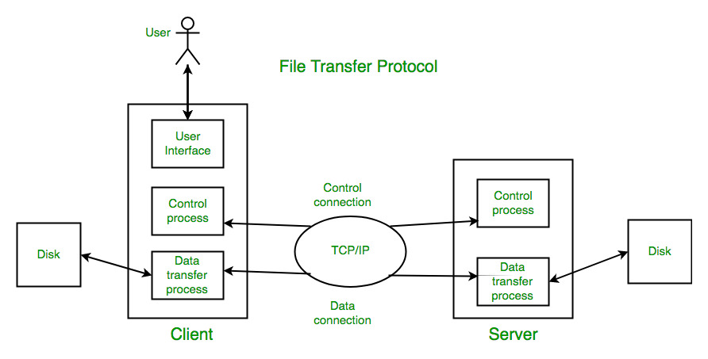

File Transfer Protocol (FTP) is a standard network protocol used for transferring files between a client and a server over a computer network. FTP allows users to upload, download, and manage files on a remote server. It operates on the application layer of the OSI model and uses the TCP/IP protocol suite for communication.
FTP works by establishing a connection between the client and the server. The client initiates the connection by sending a request to the server, which then responds with a status code indicating whether the request was successful or not. Once the connection is established, the client can send commands to the server to perform various file operations such as uploading, downloading, renaming, and deleting files.
FTP supports both anonymous and authenticated access. Anonymous FTP allows users to access files without providing any credentials, while authenticated FTP requires users to log in with a username and password. FTP also supports different modes of data transfer, including active mode and passive mode, which determine how the data connection is established between the client and the server.
